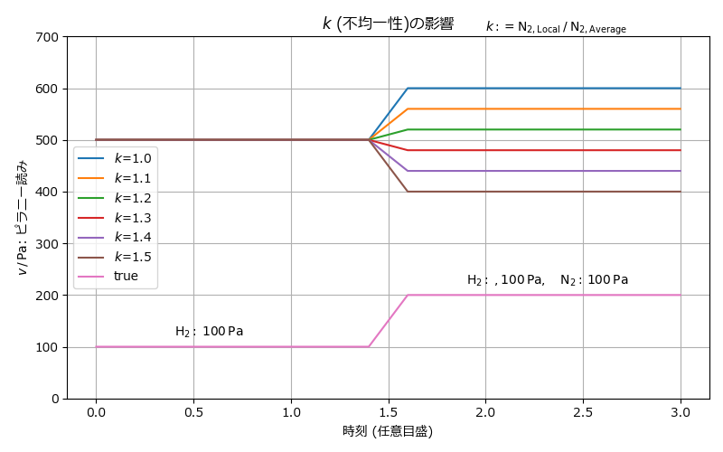

ピラニーゲージの読み#
水素が入った容器に窒素を追加で入れると, 全圧力が増加するにも かかわらず, ピラニーゲージの読みが減少するという不思議な現象が見られる.
窒素・水素の混合気体をそれぞれ分圧で \((P\sub{N_2},\, P\sub{H_2})\) と表す.
窒素導入前 \((0,\, P\sub{H_2})\)
窒素導入後 \((P\sub{N_2},\, P\sub{H_2})\)
水素に対するピラニーの読み \(v\) は 同じ圧力の窒素の場合の \(\alpha\) 倍 であるとする. すなわち,
とかける. \(0.1\sim 1\,\U{kPa}\) において \(\alpha = 5\sim 10\) 程度.
もし, 窒素と水素が一様に 混ざらず, 比重の違いや 導入管の相対位置の違いなどのために, ピラニーセンサーの位置で 窒素が優勢であると仮定する. ピラニーの位置における組成を \((P'\sub{N_2},\,P'\sub{N_2})\) として, 偏在率を
と定義すると局所的な組成は
\(P\sub{H_2}'\) は全圧が一定であることから求められる.
窒素導入前のピラニーの読みは
窒素導入後のピラニーの読みは
たとえば, \(k=5\) と仮定すると, \(P\sub{N_2}\) の係数は \(k + \alpha - k\alpha = 5 - 4\alpha\) となり, \(\alpha > 5/4 = 1.25\) で負の値をとる. つまり, わずかな偏りがあれば, 窒素を導入したにもかかわらず，ピラニーの読みは 減少する．
\(k=1\) では \(v_2=P\sub{N_2}+\alpha P\sub{H_2}\) となる.
(例) \(\alpha=5\), \(k=2\) を仮定する. \(P\sub{H_2}=100\,\U{Pa}\) に対して \(P\sub{N_2}=100\,\U{Pa}\) を導入したとする. 窒素導入前のピラニーの読みは \(v_1 = 5\times 100\,\U{Pa}=500\,\U{Pa}\) 導入後は \(v_2 = -3\times 100\,\U{Pa} + 5\times 100\,\U{Pa} = 200\,\U{Pa}\) となり, \(300\,\U{Pa}\) の見かけの減少が生じることになる.
{kind=link}

ピラニーゲージの読み#